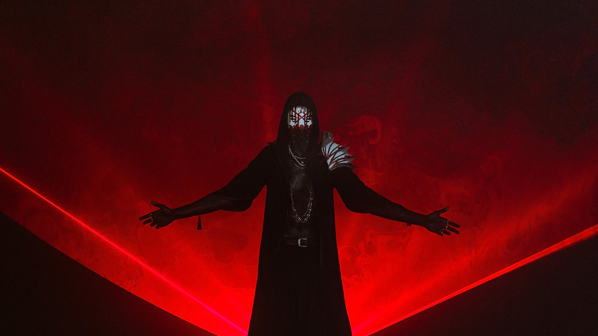

SLEEP TOKEN

Banda de metal progresivo formada en Londres en 2016 y cuyos miembros son anónimos. El grupo es un colectivo anónimo y enmascarado dirigido por un líder que usa el apodo de Vessel. Se han clasificado en muchos géneros diferentes, incluido el metal alternativo, el post-rock/metal, el metal progresivo y el indie rock/pop.